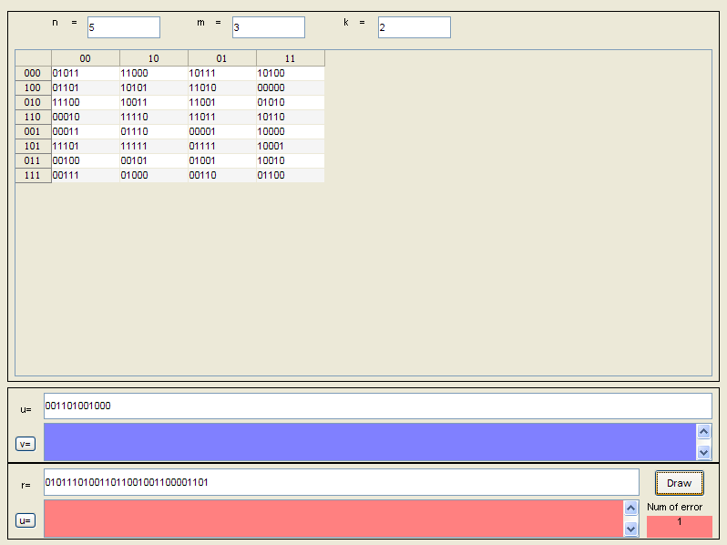

Contents
function viterbi(varargin)
global n m k dat u v r uu numerr
global inputFile outputFile
global nguon
set(0,'recursion',500);
if (nargin==0)
-------khoi tao giao dien-------
H = findobj(0,'Tag','giaodien');
if ~isempty(H)
figure(H);
else
H = figure('units','pixel','pos',[2 2 798 598],'menu','none', ...
'tag','giaodien',...
'Color',get(0,'DefaultUIControlBackgroundColor'), ...
'DefaultUIControlUnit','norm','name','Viterbi Encode-Decode Program');
figure(H);
set(gca,'Visible','off');
f=uimenu('Label','File');
uimenu(f,'Label','Open','Callback','viterbi(''open'')','Accelerator','O');
uimenu(f,'Label','Save input file','Callback','viterbi(''SaveIn'')','Accelerator','I');
uimenu(f,'Label','Save output file','Callback','viterbi(''SaveOut'')','Accelerator','U');
uimenu(f,'Label','Save all','Callback','viterbi(''SaveAll'')','Accelerator','A');
uimenu(f,'Label','Save input file As...','Callback','viterbi(''SaveInAs'')');
uimenu(f,'Label','Save output file As...','Callback','viterbi(''SaveOutAs'')');
uimenu(f,'Label','Save all as...','Callback','viterbi(''SaveAs'')');
uimenu(f,'Label','Quit','Callback','exit','Accelerator','Q');
g=uimenu('Label','Operate');
uimenu(g,'Label','Encode','Callback','viterbi(''Nhap_u'')','Accelerator','E');
uimenu(g,'Label','Decode','Callback','viterbi(''Nhap_r'')','Accelerator','D');
hh=uimenu('Label','Help');
uimenu(hh,'Label','About','Callback',@about);
uicontrol('style','frame','pos',[0.01 0.30 0.98 0.68]);
uicontrol('style','frame','pos',[0.01 0.15 0.98 0.14]);
uicontrol('style','frame','pos',[0.01 0.01 0.98 0.14]);
---khung du lieu
u=''; v=''; r=''; uu='';
n=0; m=0; k=0;
dat={''};
inputFile = '';
outputFile= '';
uicontrol('style','text','string',' n =','pos',[0.04 0.93 0.09 0.04],...
'tag','fn');
uicontrol('pos',[.12 .93 .10 .04],'style','edit','horiz','left', ...
'string','0','backgroundcolor','white', ...
'tag','nin','CallBack','viterbi(''input'')');
uicontrol('style','text','string',' m = ','pos',[0.24 0.93 0.09 0.04],...
'tag','fm');
uicontrol('pos',[.32 .93 .10 .04],'style','edit','horiz','left', ...
'string','0','backgroundcolor','white', ...
'tag','min','CallBack','viterbi(''input'')');
uicontrol('style','text','string',' k = ','pos',[0.44 0.93 0.09 0.04],...
'tag','fk');
uicontrol('pos',[.52 .93 .10 .04],'style','edit','horiz','left', ...
'string','0','backgroundcolor','white', ...
'tag','kin','CallBack','viterbi(''input'')');
---khung ket qua
uicontrol('style','text','pos',[0.02 0.23 0.03 0.03],'string','u=');
uicontrol('pos',[0.02 0.17 0.03 0.03],'string','v=','CallBack','viterbi(''Nhap_u'')','horiz','left');
uicontrol('style','text','pos',[0.02 0.09 0.03 0.03],'string','r=');
uicontrol('pos',[0.02 0.03 0.03 0.03],'string','u=','CallBack','viterbi(''Nhap_r'')','horiz','left');
uicontrol('style','edit','pos',[0.06 0.23 0.92 0.05],'string','', ...
'CallBack','viterbi(''Nhap_u'')','tag','uin','backgroundcolor','white','horiz','left');
uicontrol('style','listbox','pos',[0.06 0.154 0.92 0.07],'string','',...
'tag','vout','backgroundcolor',[0.5 0.5 1]);
uicontrol('style','edit','pos',[0.06 0.09 0.82 0.05],'string','', ...
'CallBack','viterbi(''Nhap_r'')','tag','rin','backgroundcolor','white','horiz','left');
uicontrol('style','listbox','pos',[0.06 0.013 0.82 0.07],'string','',...
'tag','uout','backgroundcolor',[1 0.5 0.5]);
uicontrol('style','text','pos',[0.89 0.03 0.09 0.05],'string','Num of error', ...
'horiz','left');
uicontrol('style','text','pos',[0.89 0.013 0.09 0.04],'string','0',...
'tag','numerr','backgroundcolor',[1 0.5 0.5]);
uicontrol('pos',[0.90 0.089 0.07 0.05],'string','Draw','CallBack',@draw,'horiz','left');
viterbi('update');
end
else
======= phan xu li =========================%
chose=varargin(1);
switch chose{1}
case 'update'
--- cap nhat lai cac o du lieu
h= findobj(0,'tag','giaodien');
figure(h);
dlvao = findobj(h,'tag','nin');
set(dlvao,'string',num2str(n));
dlvao = findobj(h,'tag','min');
set(dlvao,'string',num2str(m));
dlvao = findobj(h,'tag','kin');
set(dlvao,'string',num2str(k));
dlvao = findobj(h,'tag','uin');
set(dlvao,'string',(u));
dlvao = findobj(h,'tag','rin');
set(dlvao,'string',(r));
dlvao = findobj(h,'tag','vout');
set(dlvao,'string',(v));
dlvao = findobj(h,'tag','uout');
set(dlvao,'string',(uu));
dlvao = findobj(h,'tag','numerr');
set(dlvao,'string',num2str(numerr));
--- cap nhat bang du lieu S (dat)
cnames = cell(1,power(2,k));
for i=0:power(2,k)-1
idao='';
for t=0:k-1
idao(t+1)=bitand(bitshift(i,-t),1)+'0';
end
cnames{i+1}=idao;
end
rnames = cell(1,power(2,m));
for i=0:power(2,m)-1
idao='';
for t=0:m-1
idao(t+1)=bitand(bitshift(i,-t),1)+'0';
end
rnames{i+1}=idao;
end
for i=1:power(2,k)
ColumnEditable(i)=true;
end
uitable('tag','Sdata','units','normalized','Data',dat(1:power(2,m),1:power(2,k)),'ColumnName',cnames,'RowName',rnames,...
'Position',[0.02 0.31 0.96 0.6],'ColumnEditable',ColumnEditable,'CellEditCallback',@updateSdata);
case 'open'
--- Doc du lieu vao tu file
[filename, pathname, filterindex] = uigetfile( ...
{ '*.in*','DATA-files (*.in*)'; ...
'*.ou*','Result files (*.ou*)'; ...
'*.*', 'All Files (*.*)'}, ...
'Pick a file', ...
'MultiSelect', 'off');
switch filterindex
case 1
inputFile = [pathname,filename];
fin = fopen(inputFile,'r');
n = fscanf(fin,'%d',1) ;
m = fscanf(fin,'%d',1) ;
k = fscanf(fin,'%d',1);
dat = cell(power(2,m),power(2,k));
for i=1:power(2,m);
for j=1:power(2,k)
dat{i,j} = fscanf(fin,'%s',1);
end
end
u = fscanf(fin,'%s',1);
r = fscanf(fin,'%s',1);
case 2
outputFile=[pathname,filename];
fout = fopen(outputFile,'r');
v = fscanf(fout,'%s',1);
numerr = fscanf(fout,'%d',1);
uu = fscanf(fout,'%s',1);
end
viterbi('update');
fclose('all')
case 'SaveIn'
luu file input
if ~isequal(inputFile,[0 0])
if ~isequal(inputFile,'')
fid = fopen(inputFile,'w');
fprintf(fid,'%d %d %d \n',n,m,k);
for i=1:power(2,m)
for j=1:power(2,k)
fprintf(fid,'%s ',dat{i,j});
end
fprintf(fid,'\n');
end
fprintf(fid,'%s\n',u);
fprintf(fid,'%s',r);
fclose(fid);
else
viterbi('SaveInAs');
end
else inputFile='';
end
case 'SaveOut'
luu file ket qua
if ~isequal(outputFile,[0 0])
if ~isequal(outputFile,'')
fid = fopen(outputFile,'w');
fprintf(fid,'%s\n',v);
fprintf(fid,'%d\n',numerr);
fprintf(fid,'%s',uu);
fclose(fid);
else
viterbi('SaveOutAs');
end
else outputFile='';
end
case 'SaveAll'
luu tat ca cac file
viterbi('SaveIn');
viterbi('SaveOut');
case 'SaveInAs'
luu file input voi ten khac
[filename, pathname] = uiputfile( ...
{'*.in*','DATA-files (*.in*)'; ...
'*.*', 'All Files (*.*)'}, ...
'Save input file as');
inputFile = [pathname filename];
viterbi('SaveIn');
case 'SaveOutAs'
luu file ket qua voi ten khac
[filename, pathname] = uiputfile( ...
{'*.ou*','Result files (*.ou*)'; ...
'*.*', 'All Files (*.*)'}, ...
'Save output file as');
outputFile = [pathname filename];
viterbi('SaveOut');
case 'SaveAs'
luu tat ca cac file voi ten khac
viterbi('SaveInAs');
viterbi('SaveOutAs');
case 'encode'
--- ma hoa nguon tin u
v = '';
s = 0;
nu= numel(u);
i = 1;
while i<=nu
bitnguon = 0;
for t=0:k-1
bitnguon = bitnguon + bitshift(u(i+t)-'0',t);
end
v = [v dat{s+1,bitnguon+1}];
s = bitshift(s,k) + bitnguon;
s = bitand(s,power(2,m)-1);
i = i +k;
end
viterbi('update');
WDEavRCxrA000090002
case 'decode'
--- giai ma nguon tin r
nr = numel(r);
hh = 1;
mu2m = power(2,m);
loi = inf(mu2m,2);
loi(1,1) = 0;
truoc = zeros(mu2m,nr/n);
l = 0;
ir = 1;
while ir<=nr
hh = 3-hh;
loi(:,hh) = inf(mu2m,1);
l = l+1;
mu2k = power(2,k);
for s = 0:mu2m-1
bitnguon = bitand(s,mu2k-1);
for bitdau = 0:mu2k-1
truocs = bitshift(bitdau,m-k)+bitshift(s,-k);
tam = dat{truocs+1,bitnguon+1};
soloi = 0;
for t = 1:n
if tam(t)~=r(ir+t-1)
soloi = soloi+1;
end
end
if loi(s+1,hh) > loi(truocs+1,3-hh)+soloi
loi(s+1,hh) = loi(truocs+1,3-hh)+soloi;
truoc(s+1,l) = truocs+1;
end
end
end
ir = ir+n;
end
numerr = loi(1,hh);
sht = 1;
for i = 2:mu2m
if numerr > loi(i,hh)
numerr = loi(i,hh);
sht = i;
end
end
set(0,'RecursionLimit',max(2000,l+2))
luu=l;
nguon = zeros(luu);
while (l>=1)
find(l,sht);
l=l-1000;
end
uu = '';
for i=1:luu
for t=0:k-1
uu = [uu bitand(bitshift(nguon(i),-t),1)+'0'];
end
end
Error using ==> evalin
Undefined function or variable 'draw'.
case 'input'
--- Lay du lieu vao
h= findobj(0,'tag','giaodien');
--- Nhap n
dlvao = findobj(h,'tag','nin');
tam = get(dlvao,'string');
if ~isequal(tam,'')
tam = double(int16(eval(tam)));
if (tam>=0)
if (n~=tam)
n = tam;
r = '';
dat = cell(power(2,m),power(2,k));
for i=1:n
dat{1,1}=[dat{1,1} '0'];
end
for i=1:power(2,m)
for j=1:power(2,k)
dat{i,j}=dat{1,1};
end
end
end
else
x = errordlg('Wrong input data','Error');
waitfor(x)
end
else n=0;
end
--- Nhap m
dlvao = findobj(h,'tag','min');
tam = get(dlvao,'string');
if ~isequal(tam,'')
tam = double(int16(eval(tam)));
if (tam>=0) && (tam+k<=15)
dl = '';
for i=1:n
dl=[dl '0'];
end
if (m<tam)
dat(power(2,m)+1:power(2,tam),:) = cell(power(2,tam)-power(2,m),power(2,k));
for i=power(2,m)+1:power(2,tam)
for j=1:power(2,k)
dat{i,j}=dl;
end
end
end
if (m>tam)
dat = dat(1:power(2,tam),:);
end
if (m~=tam)
m = tam;
end
else
if (tam+k>15)
x = errordlg('Input data is too large','Error');
waitfor(x)
else
errordlg('Wrong input data','Error');
end
end
else m=0;
end
--- Nhap k
dlvao = findobj(h,'tag','kin');
tam = get(dlvao,'string');
if ~isequal(tam,'')
tam = double(int16(eval(tam)));
if (tam>=0) && (m+tam<=15)
dl = '';
for i=1:n
dl=[dl '0'];
end
if (k<tam)
dat(:,power(2,k)+1:power(2,tam)) = cell(power(2,m),power(2,tam)-power(2,k));
for i=1:power(2,m)
for j=power(2,k)+1:power(2,tam)
dat{i,j}=dl;
end
end
end
if (k>tam)
dat = dat(:,1:power(2,tam));
end
if (k~=tam)
k = tam;
r = '';
end
else
if (m+tam>15)
x = errordlg('Input data is too large','Error');
waitfor(x)
else
x = errordlg('Wrong input data','Error');
waitfor(x)
end
end
else k=0;
end
viterbi('update');
case 'Nhap_u'
Nhap tu ma nguon u
dulieu = findobj(0,'tag','uin');
tam = get(dulieu,'string');
err = false;
if ~(mod(numel(tam),k)==0)
x = errordlg('Number of bits of u (nu) must be satisfied : mod(nu,k)==0','Error');
waitfor(x)
err = true;
else
for i=1:numel(tam)
if (tam(i)~='0')&&(tam(i)~='1')
x = errordlg('Input data must be binary','Error');
waitfor(x)
err = true;
break;
end
end
end
if ~err
u = tam;
end
viterbi('update');
viterbi('encode');
case 'Nhap_r'
dulieu = findobj(0,'tag','rin');
tam = get(dulieu,'string');
err = false;
if ~(mod(numel(tam),n)==0)
x = errordlg('Number of bits of r (nr) must be satisfied : mod(nr,n)==0','Error');
waitfor(x)
err = true;
else
for i=1:numel(tam)
if (tam(i)~='0')&&(tam(i)~='1')
x = errordlg('Input data must be binary','Error');
waitfor(x)
err = true;
break;
end
end
end
if ~err
r = tam;
end
viterbi('update');
viterbi('decode');
WDEavRCxrA000090004
Nhap tu ma dich r
end

end
WDEavRCxrA000070005
WDEavRCxrA000070006
---Nhap S (dat)
function updateSdata(o,e)
dat = get(o,'data');
tam = dat{e.Indices(1),e.Indices(2)};
if (numel(tam)==n)
for index=1:n
if (tam(index)~='0')&&(tam(index)~='1')
x = errordlg('Input data must be binary','Error');
waitfor(x)
dat{e.Indices(1),e.Indices(2)} = e.PreviousData;
set(o,'data',dat);
return
end
end
else
x = errordlg('Input data length must be n','Error');
waitfor(x)
dat{e.Indices(1),e.Indices(2)} = e.PreviousData;
set(o,'data',dat);
end
end
--- Tim duong di de dat duoc so loi it nhat
function find(x,sht)
if (x>1)&&(x>l-999)
find(x-1,truoc(sht,x));
end
nguon(x) = bitand(sht-1,mu2k-1);
end
--- Ve do hinh trang thai
function draw(varargin)
H = findobj(0,'Tag','luocdo');
if ~isempty(H)
delete(H);
end
H = figure('units','pixel','pos',[2 2 798 598],'menu','none', ...
'tag','luocdo',...
'Color',[1 1 0.8], ...
'DefaultUIControlUnit','norm','name','Encode process');
figure(H);
axis off
mu2m=power(2,m);
ss = 0;
nu= numel(u);
stepii = 0.8/(power(2,m)-1);
stepjj = 0.8/nu*k;
for ii = 0:power(2,m)-1
for jj = 0:nu/k
h = annotation('ellipse',[0.15+stepjj*jj 0.15+stepii*ii 0.01 0.01]);
set(h,'facecolor','blue');
end
h = annotation(H,'textbox',[0.1 0.13+stepii*ii 0.05 0.05]);
set(h,'string',['S' num2str(mu2m-1-ii)]);
set(h,'edgecolor','none','HorizontalAlignment','left');
set(h,'color','magenta');
end
h = annotation(H,'textbox',[0.02,0.05 0.17 0.05]);
set(h,'string','Encode : v==');
set(h,'edgecolor','none','HorizontalAlignment','left');
set(h,'color','blue');
for jj = 1:nu/k
bitnguon = 0;
for tt=1:k
bitnguon = bitnguon + bitshift(u((jj-1)*k+tt)-'0',tt-1);
end
snew = bitshift(ss,k) + bitnguon;
snew = bitand(snew,power(2,m)-1);
x = [0.15+stepjj*(jj-1) 0.15+stepjj*jj];
y = [0.15+stepii*(mu2m-1-ss) 0.15+stepii*(mu2m-1-snew)];
h = annotation(H,'arrow',x ,y);
set(h,'color','red');
h = annotation(H,'textbox',[sum(x)/2,sum(y)/2 0.05 0.05]);
set(h,'string',u((jj-1)*k+1:jj*k));
set(h,'edgecolor','none','HorizontalAlignment','left');
set(h,'color',[0 0 0.2]);
h = annotation(H,'textbox',[sum(x)/2,0.05 0.05 0.05]);
set(h,'string',dat{ss+1,bitnguon+1});
set(h,'edgecolor','none','HorizontalAlignment','left');
set(h,'color','red','backgroundcolor','yellow');
ii = ii +k;
ss=snew;
end
end
function about(varargin)
h = msgbox({'Author : Vo Hoang Manh Hung' 'Class : Đ05VAT1' 'PTIT' '5-2008'},'About');
waitfor(h);
end
end
WDEavRCxrZ000020006